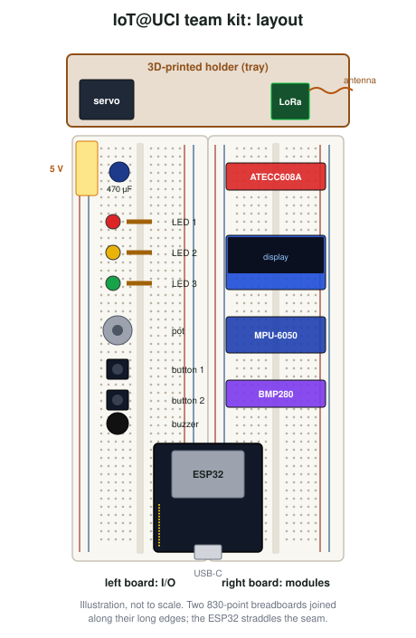
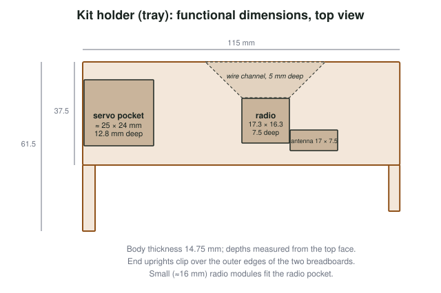
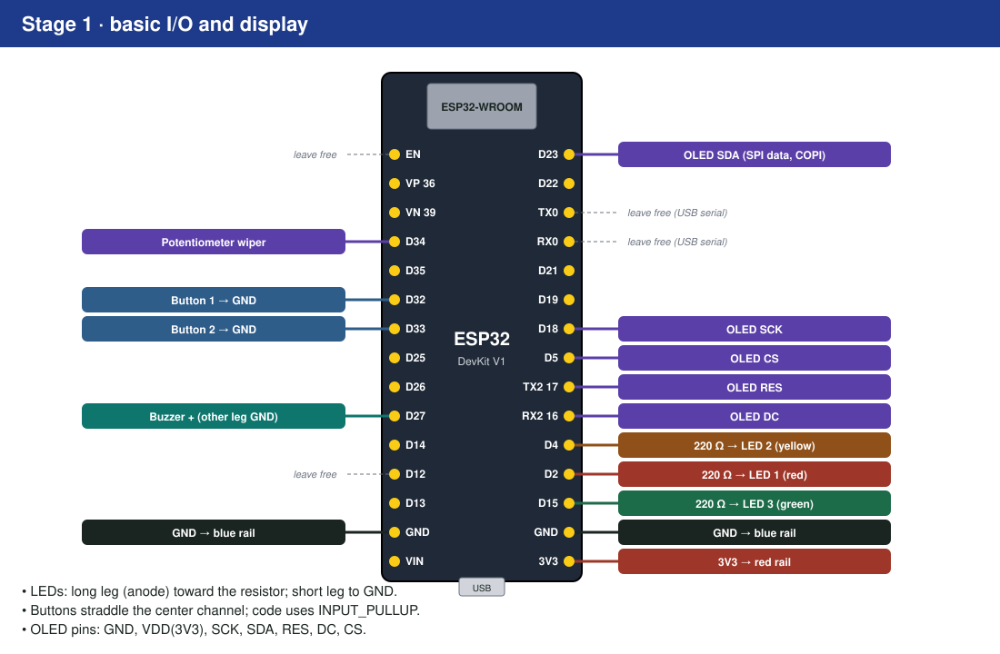
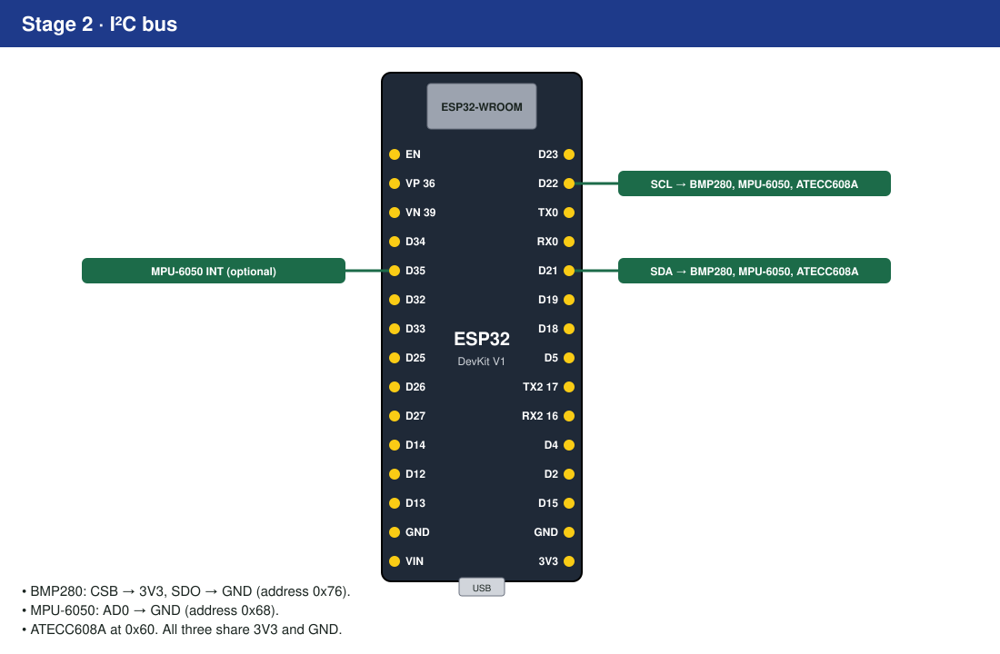
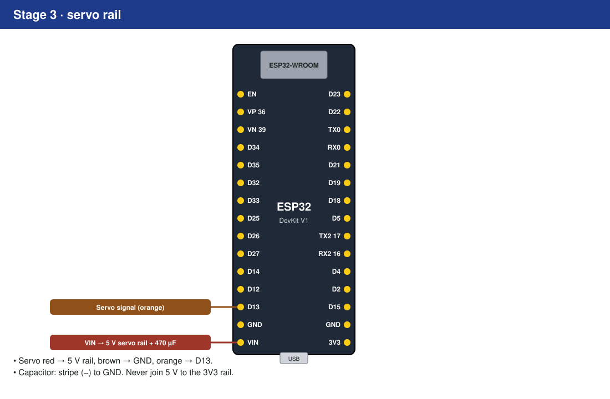
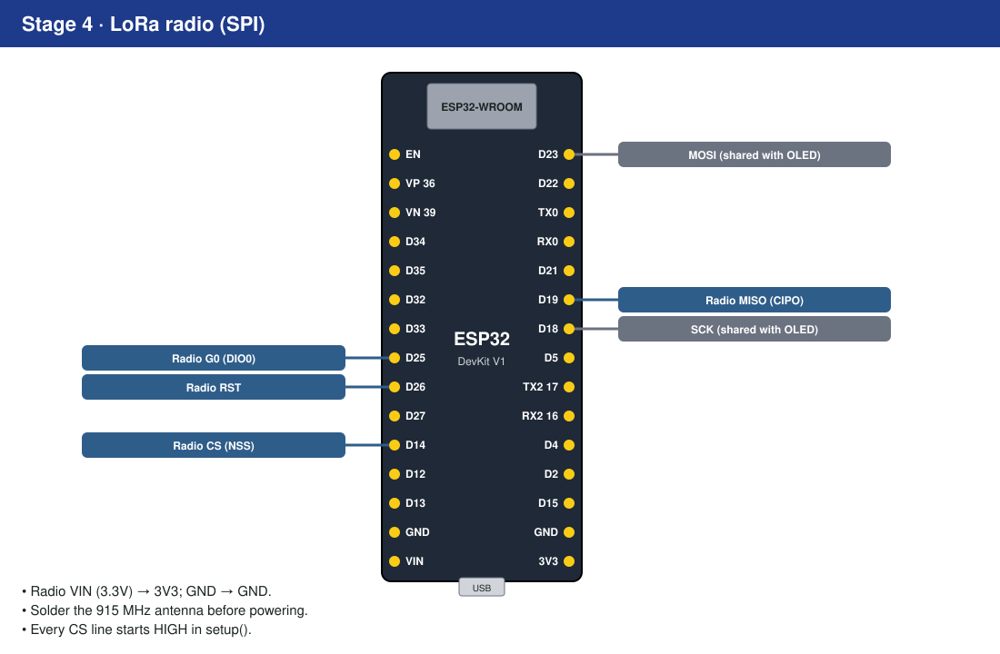

Appendix A — Kit Reference
This appendix describes the IoT@UCI kit as built in Fall 2026, in enough detail for another course to build compatible kits. If your term’s kit or starter code differs, the starter’s iot_pins.h is authoritative. Photos of a finished kit will be added in a later release; the illustrations below show the layout.
A.1 What the finished kit looks like

The layout follows a few deliberate rules:
- Two 830-point breadboards, joined along their long edges, give every module its own rows and leave space for project additions.
- The ESP32 straddles the seam between the boards, at the end nearest the edge of the desk, so the USB cable does not cross the circuit.
- Left board, top to bottom: the 5 V servo rail and its capacitor, three LEDs, the potentiometer, two buttons and the buzzer. These are the parts students touch.
- Right board, top to bottom: ATECC608A, OLED, MPU-6050, BMP280. All four sit on shared buses, so their header pins line up with the bus wiring.
- The holder at the top keeps the servo and radio from pulling on their wires.
A.2 Bill of materials
Each kit is shared by a team of two or three students. Part numbers are the ones used in Fall 2026; equivalent parts work if they match the noted specifications.
| Qty | Part | Specification that matters | Fall 2026 source / part no. |
|---|---|---|---|
| 1 | ESP32 DevKit V1 (ESP32-WROOM-32), 30-pin, USB-C | 30-pin pinout shown in Figure A.3 | AITRIP 4-pack, Amazon B0GBVDJLSF |
| 1 | USB-C to USB-C cable, 1 m | Data cable, not charge-only | SMAYS 10-pack, Amazon B0CC5J8GB7 |
| 2 | 830-point solderless breadboard | Split power rails are common; check | ELEGOO 3-pack, Amazon B01EV6LJ7G |
| 1 pack | Jumper wires (male–male) and 22 AWG solid-core wire | Solid core for flat wiring | ELEGOO 120-pack B01EV70C78; Adafruit #1311 |
| 3 | LEDs: red, yellow, green, 5 mm | Assorted 600-pack, Amazon B0FL1T4ZHT | |
| 3 | 220 Ω resistors, ¼ W | Resistor assortment, Amazon B0F4P352BB | |
| 2 | 6 × 6 mm tactile push buttons | 4-pin, fits across the center channel | DAOKI 100-pack, Amazon B01CGMP9GY |
| 1 | 10 kΩ linear potentiometer, breadboard-friendly | 0.1 in (2.54 mm) pin pitch | Adafruit #4133 (or #562) |
| 1 | Passive piezo buzzer | Passive (needs a tone), ≈12 mm | Adafruit #160 (PS1240) |
| 1 | 0.96 in 128 × 64 OLED, SSD1306, 7-pin SPI | Pins GND, VDD, SCK, SDA, RES, DC, CS | UMLIFE 6-pack, Amazon B08SJW4J4P |
| 1 | BMP280 breakout, 3.3 V | 6-pin with CSB and SDO broken out | Amazon B0B38CBXG1 |
| 1 | MPU-6050 (GY-521) breakout | AD0 and INT broken out | HiLetgo 3-pack, Amazon B00LP25V1A |
| 1 | ATECC608A breakout | I²C, address 0x60 | SparkFun DEV-18077 (DigiKey) |
| 1 | SG90-class micro servo, 180° | 4.8–6 V, three-wire | Miuzei 10-pack, Amazon B072V529YD |
| 1 | 470 µF, 16 V electrolytic capacitor | ≥ 10 V rating | Nichicon UHE1C471MPD6 (DigiKey) |
| 1 | LoRa radio, 915 MHz (North America) | SX1276-based; small 16 × 16 mm module fits the holder | Adafruit RFM95W #3072, or bare RFM95W-915S2 |
| 1 | 915 MHz spring antenna (or 78 mm of 22 AWG wire) | Quarter-wave at 915 MHz | Adafruit #4269 |
| — | Header pins (male), 40-pin strips | Cut to length | Amazon B0774VBJ3J |
| 1 | Printed holder (tray) | See below | Breadboard Snap-On Component Tray (830-point), designed by Alvin Ma; free download, printed in PLA or PETG |
In Fall 2026 the parts for one new kit cost roughly $55–60 at pack prices, excluding the printed holder, tax and shipping; the radio and the secure element account for about $23 of that.
A simple wire antenna works best at a quarter of the wavelength. At 915 MHz the wavelength is \(\lambda = c / f = 3\times10^8 / 9.15\times10^8 \approx 0.328\) m, so \(\lambda/4 \approx 82\) mm. A real wire is made slightly shorter (about 95%) because the signal travels a little slower along a conductor than in free space, which gives the familiar ≈78 mm.
A.3 The printed holder
The holder is a single printed part that clips over the outer edges of the two breadboards and carries the servo and the radio, so that they do not pull on their wires.
The holder is the Breadboard Snap-On Component Tray (830-point), designed by Alvin Ma and shared as a free download on Cults3D: https://cults3d.com/en/3d-model/gadget/breadboard-snap-on-component-tray-830-point. Download the STL there rather than from a copy: the designer keeps it up to date based on feedback from users, and instructors who need a variation for their own kits can find his other designs on the same page. This book does not redistribute the file.

Key dimensions (useful to check a print against the kit):
| Feature | Value | Why |
|---|---|---|
| Body | 115 × 37.5 mm, 14.75 mm thick | Spans two 55 mm-wide breadboards plus clip walls |
| End uprights | ≈ 4 mm wide, extending to 61.5 mm | Clip over the breadboards’ outer edges |
| Servo pocket | ≈ 25 × 24 mm, 12.8 mm deep | SG90 body (≈ 23 × 12 × 23 mm) lying on its side, with clearance |
| Radio pocket | ≈ 17.3 × 16.3 mm, 7.5 mm deep | Bare 16 × 16 mm RFM95W module |
| Antenna arm | ≈ 17 × 7.5 mm | Keeps the spring antenna away from the board |
| Wire channel | Tapered, 5 mm deep | Routes the radio’s wires down to the right breadboard |
Larger breakout-style radios (such as the 29 × 25 mm RadioFruit board) do not fit the radio pocket; they sit on the right breadboard instead.
Printing tips: PLA or PETG, 0.2 mm layers, 15–20% infill, no supports if printed pocket-side up. Print one, test-fit a servo, a radio and both breadboards, then print the rest.
A.4 Wiring by stage
The kit is wired in four stages, each just before the chapter that first needs it (Lab 1).




A.5 Pin map
| Function | GPIO | Notes |
|---|---|---|
| LED 1 (red) | 2 | Strapping pin; also the board’s blue LED on many DevKits |
| LED 2 (yellow) | 4 | |
| LED 3 (green) | 15 | Strapping pin |
| Button 1 | 32 | INPUT_PULLUP, active low |
| Button 2 | 33 | INPUT_PULLUP, active low |
| Potentiometer wiper | 34 | Input-only, ADC1 |
| Buzzer | 27 | LEDC channel shared with tone() |
| Servo signal | 13 | On its own LEDC channel; powered from the 5 V rail |
| I²C SDA | 21 | BMP280 0x76, MPU-6050 0x68, ATECC608A 0x60 |
| I²C SCL | 22 | |
| MPU-6050 INT (optional) | 35 | Input-only |
| SPI SCK | 18 | Shared: OLED, LoRa |
| SPI COPI (MOSI) | 23 | Shared: OLED (“SDA” on the module), LoRa |
| SPI CIPO (MISO) | 19 | LoRa only |
| OLED CS | 5 | Strapping pin |
| OLED DC | 16 | |
| OLED RES | 17 | |
| LoRa CS (NSS) | 14 | |
| LoRa RST | 26 | |
| LoRa G0 (DIO0) | 25 |
Free pins for project additions include GPIO 12 (a strapping pin: must not be pulled high at boot), 36 and 39 (input-only). Check Table 2.2 before using any pin.
A.6 iot_pins.h
The starter projects define the pins in one header, so code refers to names rather than numbers:
#pragma once
#include <stdint.h>
namespace IoTPins {
// Stage 1
constexpr uint8_t LED_1 = 2; // red
constexpr uint8_t LED_2 = 4; // yellow
constexpr uint8_t LED_3 = 15; // green
constexpr uint8_t BUTTON_1 = 32;
constexpr uint8_t BUTTON_2 = 33;
constexpr uint8_t POT_ADC = 34;
constexpr uint8_t BUZZER = 27;
constexpr uint8_t SPI_SCK = 18;
constexpr uint8_t SPI_MOSI = 23;
constexpr uint8_t SPI_MISO = 19;
constexpr uint8_t OLED_CS = 5;
constexpr uint8_t OLED_DC = 16;
constexpr uint8_t OLED_RES = 17;
// Stage 2
constexpr uint8_t I2C_SDA = 21;
constexpr uint8_t I2C_SCL = 22;
constexpr uint8_t MPU6050_INT = 35;
// Stage 3
constexpr uint8_t SERVO = 13;
// Stage 4
constexpr uint8_t LORA_CS = 14;
constexpr uint8_t LORA_RST = 26;
constexpr uint8_t LORA_G0 = 25;
}
namespace IoTAddr {
constexpr uint8_t BMP280 = 0x76;
constexpr uint8_t MPU6050 = 0x68;
constexpr uint8_t ATECC608A = 0x60;
}A.7 Power
- The board is powered from USB (5 V), regulated to 3.3 V for the ESP32 and the 3V3 rails.
- VIN carries the USB 5 V (minus a diode drop on some boards) and feeds only the servo rail.
- Budget: the 3.3 V regulator on a typical DevKit supplies several hundred milliamperes, and Wi-Fi transmission alone can draw up to about 250 mA in bursts. Do not power motors or additional radios from 3V3.
A.8 Kit care
- Unplug USB before changing wiring.
- Keep the antenna attached to the LoRa radio.
- Store the kit with wires pressed flat and parts seated; loose parts are the most common cause of “it worked yesterday”.
- Report damaged parts to the teaching staff rather than swapping in parts from elsewhere.